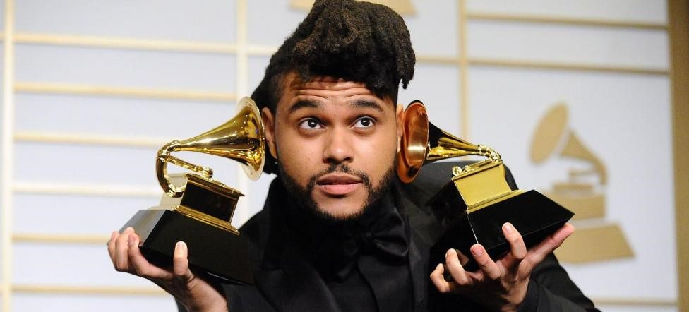
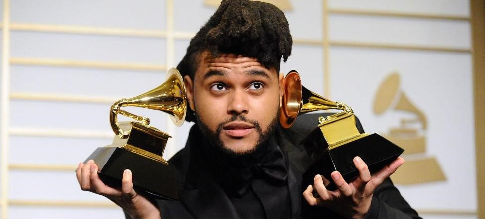
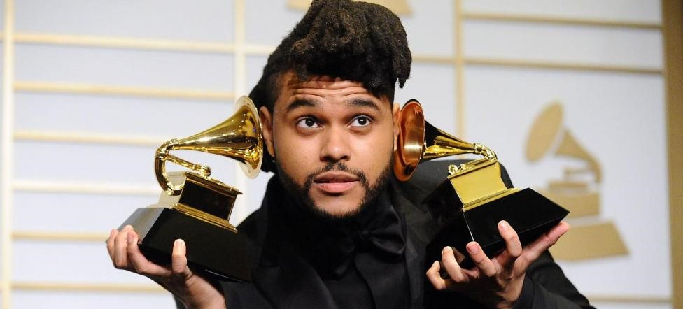

Abel Makkonen Tesfaye mejor conocido artísticamente como The Weeknd; nació en Toronto, Ontario el 16 de febrero de 1990. Es un cantante, rapero, compositor y productor discográfico. Conocido por su versatilidad sónica y lirismo oscuro, su música explora el escapismo, el romance y la melancolía, y a menudo se inspira en experiencias personales. Ha recibido numerosos elogios, incluidos cuatro premios Grammy, 20 premios Billboard Music Awards, 17 premios Juno, seis American Music Awards, dos MTV Video Music Awards y nominaciones para un premio de la Academia, un premio Grammy Latino y un premio Primetime Emmy.

Tesfaye comenzó su carrera en 2009, cuando tan sólo tenía 19 años, lanzando música de forma anónima en Youtube. Dejando la escuela un fin de semana, de ahí nace su nombre artistico con el que el mundo lo conoce. Dos años después, cofundó el sello discográfico XO y lanzó los mixtapes "House of Ballons", "Thursday" y "Echoes of Silence". En 2012, firmó con Republic Records y relanzó los mixtapes en el álbum recopilatorio "Trilogy". En 2013, después del gran éxito que fue su álbum recopilatorio junto a su nuevo sello discográfico, continuo lanzando más música, ahora fue el turno de "Kiss Land", debutando en el número 2 en la lista de Billboard 200 de los Estados Unidos, vendiendo 96 mil copias. Llegó el año 2015 y no podría faltar otro lanzamiento top de Tesfaye, esta vez con "Beauty Behind The Madness", en el cual una de sus canciones fue soundtrack de una película muy conocida y gracias a ello obtuvo una nominación para un premio de la Academia. Al año siguiente en 2016, sorprendió a todos con su nuevo álbum "Starboy", el cual tuvo millones de reproducciones y colaboraciones inimaginables como lo fue la de Daft Punk, en dos de sus sencillos. Tuvieron que pasar dos años más, para que lanzará su primer extended play "My Dear Melancholy," y en el año 2020, regresó con uno de los álbum más escuchados hasta la fecha "After Hours", el cual contiene muchos éxitos que se convirtieron en tendencia global, por último su más reciente álbum "Dawn FM", lanzado en 2022; el cual contiene la participación de Jim Carrey en la narración del mismo.


Se encuentra entre los artistas más populares con mayores ventas del mundo con más de 75 millones de discos vendidos. Tesfaye tiene varios récords de streaming y de las listas de Billboard. Es el primer artista en debutar simultáneamente entre los tres primeros lugares de la lista Hot R&B/Hip-Hop Songs, mientras que "Bliding Lights" está clasificada como la mejor canción Hot 100 en la historia de Billboard. A menudo considerado como una figura prominente en la música popular contemporánea. Tesfaye fue cátalogado por la revista Time como una de las personas más influyentes del mundo en 2022. Defensor de la igualdad racial y la seguridad alimentaria, fue nombrado Embajador de Buena Voluntad del Programa Mundial de Alimentos en 2021.